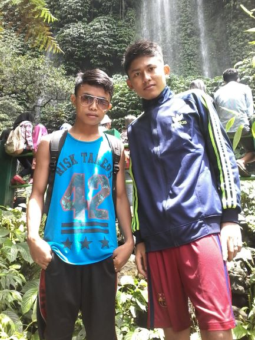
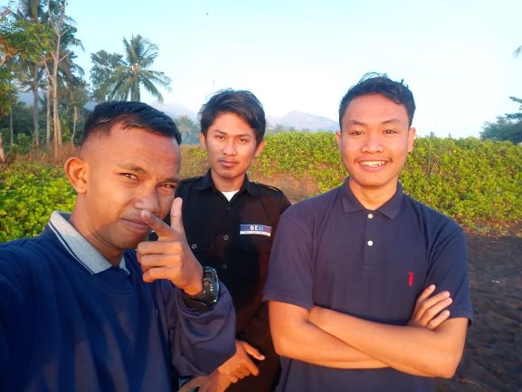
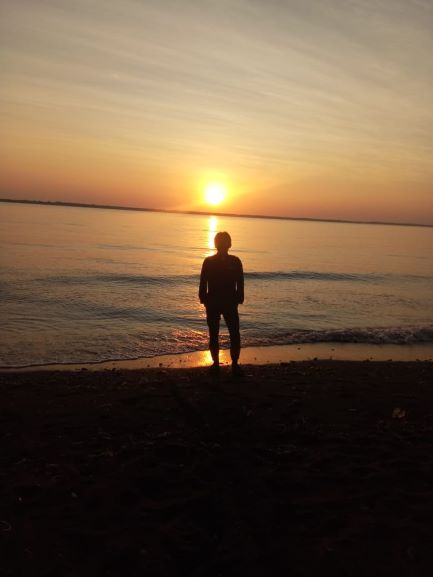
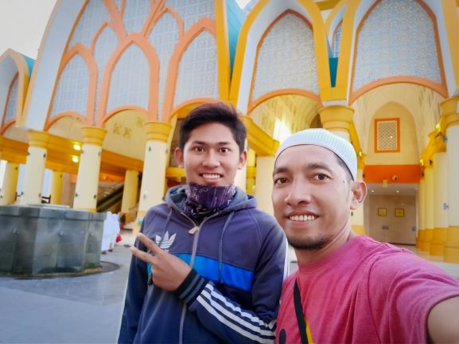
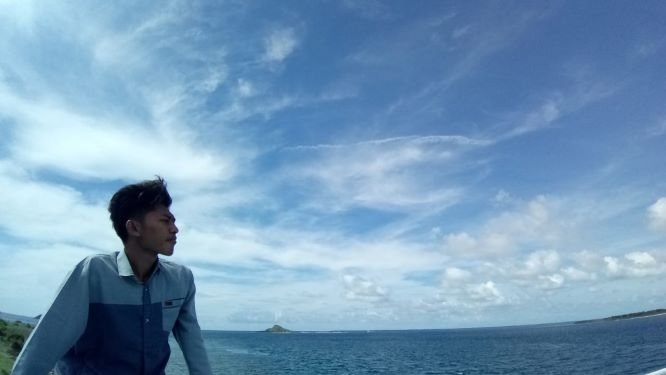

Khairoel Kahfie
Mahasiswa | Developer | Enginer
Galeri
-

Liburan -

Reunian -

Sunrice -

Islamic Center -

Touring
About
Saya Khairoel Kahfie, seorang mahassiswa di salah satu perguruan tinggi swasta di Lombok Tengah. Sekarang baru semester 7 dan mengambil jurursan sistem informasi dan saya fokus di data saince dengan menggunakan bahasa python
riwayat pendidikan saya, saya masuk sekolah dasar di sekolah dasar 2 beraim praya tengah pada tahun 2004 dan lulus pada tahun 2010 dan melanjutkan pendidikan di SMP 3 Praya Tengah dan melanjutkan sekolah ke madarasah Aliah Muallimin Nw Pancor
contact
| Nim | SI13160008 |
| Nama | Khairul Kahfi Al Mubarrak |
| Jenis Kelamin | Laki Laki |
| Jurusan | Sistem Informasi |
| Alamat | Beraim City |
| Alumni | Ma Muallimin NW Pancor |
| Golognan Darah | A |
| Konsentrasi | Meminta Petunjuk Allah SWT |
Social Media